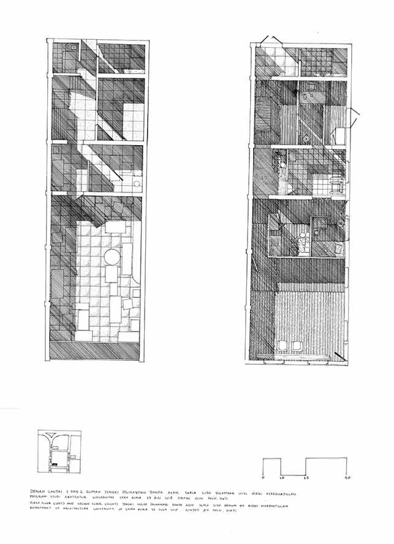

Alhamdulillah (Thanks to Allah Almighty), we express our gratitude to Allah, who supported and enabled us in finishing this research project entitled ”Re-creation of Banda Aceh's Built-heritage through Digital Humanities Approach as a Tool for Trauma Mitigation in a Post-disaster Society” under collaboration with Dr. Julie Nichols from University of South Australia. This research was only possible because of the friendly and welcoming reception we received from our respondents in Peunayong, who told us their stories and perceptions of the 19th Century Chinese-style shophouses. We had a very good team Vernadoc participants from Department of Architecture and Planning, Syiah Kuala University. We also met many people, government officials, expert, visitors, and inhabitants of Banda Aceh, during our fieldwork that may not appear in this research, but who nonetheless helped us to carry out our research and better understand the context of our case studies. We would also like to thank the Ministry of Research and Higher Education, Directorate of Research and Community Service, Directorate General of Research Development, for providing the financial support for this research projects through Penelitian Kerjasama Luar Negeri (PKLN)/ International Research Collaboration Scheme 2018.
Alhamdulillah (puji dan syukur kami panjatkan kepada Allah SWT), yang telah memudahkan kami dalam menyelesaikan penelitian yang berjudul ”Re-creation of Banda Aceh's Built-heritage through Digital Humanities Approach as a Tool for Trauma Mitigation in a Post-disaster Society” dengan kolaborasi dengan Dr. Julie Nichols dari University of South Australia. Buku ini merupakan hasil dokumentasi dari penelitian tersebut. Penelitian ini hanya mungkin terlaksana dengan adanya sambutan yang ramah dan bersahabat yang kami terima dari responden kami di Peunayong, yang menceritakan kepada kami kisah dan persepsi mereka tentang keberadaan dan konservasi bangunan ruko abad ke-19 dengan gaya arsitektur Cina-Eropa. Penelitian ini juga ingin mengucapkan terima kasih untuk tim Peunayong Vernadoc yaitu para peserta Vernadoc dari Departemen Arsitektur dan Perencanaan, Universitas Syiah Kuala yang telah menggambar kembali bagunan cagar budaya.Ucapan terima kasih juga kami berikan kepada berbagai pihak, pejabat pemerintah, ahli, pengunjung, dan penduduk Banda Aceh, yang telah membantu kami di lapangan yang mungkin tidak muncul dalam penelitian ini. Bantuan berbagai pihak ini sangat membantu kami memahami konteks studi kasus dengan lebih baik. Kami juga ingin mengucapkan terima kasih kepada Kementerian Riset dan Pendidikan Tinggi, Direktorat Riset dan Pengabdian Masyarakat, Direktorat Jendral Penguatan Riset dan Pengembangan untuk memberikan dukungan keuangan untuk proyek penelitian ini melalui Program Penelitian Kerjasama Kerjasama Luar Negeri (PKLN) / Skema Penelitian Internasional 2018.
By Julie Nichols, PhD
The catastrophic events of the 2004 Tsunami in Banda Aceh, not only devastated the Acehnese community through loss of life and their built environment, it also destroyed their invaluable built cultural heritage records. The largest repositories of Acehnese built cultural heritage remain in the Netherlands and Jakarta. One of my dear friends and I had just embarked on our PhD journey together at the University of Adelaide in 2004. That friend is Dr Izziah Hasan, now Head of Department in the Faculty of Architecture and Engineering at University of Syiah Kuala, and our ideas to work together have been realised fourteen years later. It is through Izziah, I met the wonderful Dr Cut Dewi, also now another close friend and together we formulated a plan to begin the challenging task of documenting Banda Aceh’s built cultural heritage. This project is working toward the re-instatement of those lost archival records to safe guard the memories of the community in a multi-modal format to prevent future losses. We have coined the “Aceh Method” to describe the main processes of representation, recording and drawing. It involves manual [VERNADOC] and digital capture [photogrammetry and virtual models] of built forms ranging from traditional Lambunot Village vernacular to Peunayong Chinese Shophouses, to re-present Aceh’s heritage in a variety of different ways to appeal to a broad audience. This book captures one of those case studies utilising VERNADOC.
VERNADOC (an acronym for vernacular documentation) is a low technology method of built-form documentation that involves on-site cultural immersion and immediate transfer of measured information to the drawing page.
VERNADOC is an immersive method of documenting built form that requires the production of drawings on site in an interactive process that places the researcher, subject and record in context enabling knowledge transfer and experiential understanding to be transcribed. Key features of this manual process are the positioning of researchers with the subject over an extended time-period maximising opportunity for interactive local community input and meaningful outcomes.
These documents communicate traditions of building, contextualise the structures within their environment, record spatial relationships between buildings and, through the accurate depiction of everyday artefacts, the buildings’ role in communal life. These documents are not only records but are also interactive representations of the subject. Unlike photographic images which record instantaneously a single moment in time these images are collaborative both during their production and through interpretive readings and activation as archival records. [Nichols et al 2017]
The Peunayong shophouses represent a wonderful example of cultural diversity expressed in an architectural form, characteristic of Aceh’s rich and inclusive history. Architectural heritage often presents with an uncertain future. The drawings have captured these buildings, their details and unique qualities, for the prosperity of all to enjoy.
[Excerpt above from paper: J. Nichols, D. Fong, S. Avey (2017) “Interactive and Multi-Modal Archiving: Re-envisioning Acehnese Built Cultural Heritage” Published in the Proceedings of the Digital Cultural Heritage Future Visions Conference, held on 19-20 April 2017, State Library of Queensland, Brisbane, QLD.]
Oleh Julie Nichols, PhD
University of South Australia (UniSA)
Peristiwa bencana Tsunami 2004 di Banda Aceh, tidak hanya meluluhlantakkan masyarakat Aceh dan memakan banyak korban dan merusak lingkungan binaan, peristiwa itu juga menghancurkan dokumentasi warisan budaya yang tak ternilai harganya. Repositori terbesar warisan budaya yang dibangun di Aceh berada di Belanda dan Jakarta. Salah satu teman saya yang terkasih yang saya kenal ketika saya baru saja memulai program PhD kami di Univesity of Adelaide pada tahun 2004. Gagasan dokumentasi cagar budaya di Aceh saya mulai bersama dengan sahabat saya Dr Izziah Hasan, sekarang Ketua Jurusan Arsitektur dan Perencanaan, FakultasTeknik, Universitas Syiah Kuala. Namun, gagasan ini baru terwujud setelah empat belas tahun kemudian. Melalui Izziah, saya bertemu dengan Dr Cut Dewi yang luar biasa, yang juga sekarang merupakan teman dekat dan bersama-sama kami menyusun rencana untuk memulai penelitian multi tahun untuk mendokumentasikan warisan budaya Banda Aceh khususnya dan Indonesia umunya. Proyek ini menghimpun kembali catatan arsip yang hilang untuk menjaga memori masyarakat dalam format multi-modal untuk mencegah kerugian di masa depan. Kami telah menciptakan “Aceh Method" untuk menggambarkan proses utama pembuatan gambar dan dokumentasi ulang. Metode ini menggunakan teknik gambar manual dengan tangan [VERNADOC] dan metode digital [fotogrametri dan model virtual] dari bentuk-bentuk yang dibangun mulai dari bangunan vernakular di Lambunot (Rumoh Aceh) ke bangunan ruko di Peunayong, untuk menampilkan kembali warisan Aceh dalam berbagai cara berbeda untuk menarik khalayak luas. Buku ini menampilkan salah satu dari studi kasus yang menggunakan metode VERNADOC.
VERNADOC (akronim untuk dokumentasi vernakular) adalah metode dokumentasi dengan teknologi sederhana yang langsung dilakukan ditempat dengan interaksi langsung dengan cagar budaya.
VERNADOC adalah metode mendalam untuk mendokumentasikan bentuk asli yang dilakukan langsung di lokasi cagar budaya dengan proses pembelajaran yang interaktif antara peneliti, masyarkat, dan bangunan. Fitur utama dari proses manual ini adalah memposisikan peneliti dengan subjek selama waktu yang lama. Sehingga gambar yang dihasilkan bukan saja sebuah dokumentasi arsitektur tapi juga budaya dan kehidupan sehari-hari sebuah bangunan.
Dokumen-dokumen ini mengkomunikasikan tradisi bangunan, mengontekstualisasikan struktur dalam lingkungan mereka, merekam hubungan spasial antara bangunan dan, melalui penggambaran akurat benda yang dipakai sehari-hari, dan peran bangunan dalam kehidupan komunal masyarakat. Dokumen-dokumen ini tidak hanya catatan tetapi juga representasi yang interaktif dari bangunan. Tidak seperti gambar-gambar fotografi yang merekam secara instan satu saat tertentu, gambar-gambar ini bersifat kolaboratif baik selama produksi mereka dan melalui pembelajaran dan aktivitas interpretatif. [Nichols dkk 2017]
Ruko-ruko Peunayong merupakan contoh bagus dari keragaman budaya yang diekspresikan dalam bentuk arsitektur, karakteristik dari sejarah Aceh yang kaya dan inklusif. Peninggalan arsitektur sering menghadirkan masa depan yang tidak pasti. Gambar-gambar telah menangkap bangunan-bangunan ini, detailnya dan kualitas uniknya, untuk kemakmuran semua untuk dinikmati.
[Kutipan diatas dari artikel: J. Nichols, D. Fong, S. Avey (2017) “Interactive and Multi-Modal Archiving: Re-envisioning Acehnese Built Cultural Heritage” Published in the Proceedings of the Digital Cultural Heritage Future Visions Conference, held on 19-20 April 2017, State Library of Queensland, Brisbane, QLD.]
This book is part of the research project entitled ‘Re-creation of Banda Aceh's Built-heritage through Digital Humanities Approach as a Tool for Trauma Mitigation in a Post-disaster Society’ which based on the research borrowed several methods from various disciplines. We aim not only to document heritage buildings, 19th Century shophouses, but also to fully understand the ways local inhabitants and owners of the shophouses understand heritage, so that influence conservation decision they take. There are several layers of digital humanities method that enrich each other employed in this research. Observation, Vernadoc Documentation, casual conversation, and formal recorded interviews with owners, inhabitants, head of village, people attending the exhibition, and the Vernadoc participants. We did a two-month dedicated fieldwork and 2 weeks Vernadoc method in 2018 in Peunayong. To explore what is the meaning a multicultural place like Peunayong within Islamic Society, and sorts of identity and memory work undertaken, a semi-structure interview was conducted in Peunayong. This research focuses on architectural heritage around the area – especially on the late 19th Century shophouses. A total of 46 semi strucrured interviews in 2018 were undertaken, with owners of the shophouses, tenants, and other Inhabitants such as workers, people working daily in the area. In addition to this, a casusal conversation with inhabitants were also undertaken. All interviews were undertaken one-to-one, recorded and transferred into verbatim notes. The notes then read through and themes were identified according to the purposes of the research to derive descriptive analysis and statistics
Originally Vernadoc method borrows some techniques from antique roman architects in documenting Greece elevated architecture. This old method was also used by Renaissance architects in studying Greece and Roman antiquity (Mattilla, 2015). Then this method has evolved in Finland, especially at Helsinki University of Technology (HUT, today Aalto University AU). Since 1887, the HUT documentation has been done in every year. In 2005, as the first international documentation undertaken, the method is called Vernadoc (Vernacular Documentation). The concept of Vernadoc today are:
Buku ini adalah bagian dari proyek penelitian yang berjudul ‘Re-creation of Banda Aceh's Built-heritage through Digital Humanities Approach as a Tool for Trauma Mitigation in a Post-disaster Society’ yang meminjam beberapa metode dari berbagai disiplin ilmu. Kami bertujuan tidak hanya untuk mendokumentasikan bangunan-bangunan bersejarah, ruko-ruko abad ke-19 di Peunayong, tetapi juga untuk sepenuhnya memahami cara penduduk setempat dan pemilik ruko memahami warisan, sehingga mempengaruhi keputusan konservasi yang mereka ambil. Ada beberapa tahap metode digital humanities yang saling memperkaya satu sama lain dalam penelitian ini. Observasi, Dokumentasi Vernadoc, percakapan non-formal, dan wawancara semi terstruktur yang direkam dengan pemilik, penduduk, kepala desa, orang yang menghadiri pameran, dan peserta Vernadoc. Kami melakukan penelitian lapangan selama dua bulan dan metode Vernadoc selama 2 minggu pada tahun 2018 di Peunayong. Untuk mengeksplorasi apa arti cagar budaya dan memori bagi masyarakat multikultur seperti Peunayong yang berada di wilayah yang mayoritas muslim, dilakukan melalui wawancara semi-terstruktur. Penelitian ini berfokus pada warisan arsitektur berupa ruko akhir abad ke-19. Sebanyak 46 wawancara semi strucrured pada 2018 dilakukan, dengan pemilik ruko, penyewa, dan penghuni lainnya seperti pekerja, orang yang bekerja setiap hari di daerah tersebut. Selain itu, percakapan informal dengan penduduk juga dilakukan. Semua wawancara dilakukan perorangan, direkam dan ditransfer ke dalam Verbatim notes. Catatan kemudian dibaca dan tema diidentifikasi sesuai dengan tujuan penelitian untuk memperoleh analisis deskriptif dan statistik. Metode ini digabung dengan metode Vernadoc untuk mendokumentasikan bangunan.
Awalnya metode Vernadoc meminjam beberapa teknik dari arsitek Romawi kuno dalam mendokumentasikan arsitektur Yunani yang hebat. Metode lama ini juga digunakan oleh arsitek Renaisans dalam mempelajari Yunani dan jaman Romawi (Mattilla, 2015). Kemudian metode ini telah berevolusi di Finlandia, khususnya di Universitas Teknologi Helsinki (HUT, sekarang Universitas Aalto). Sejak 1887, dokumentasi HUT telah dilakukan di setiap tahun. Pada tahun 2005, dokumentasi internasional pertama dilakukan, metode ini disebut Vernadoc (Vernakular Documentasi). Konsep Vernadoc hari ini adalah:
By Cut Dewi, PhD
The relationship between Chinese and Acehnese had been developed since at least 13th Century when Cheng Ho came to South Asia including Aceh to build bureaucratic relationship (Wijaya Kusuma, 2000 and Usman, 2009). Chinese neighborhood in Banda Aceh, Peunayong presumably was established between 15th and 18th Century when Aceh and China developed trading activities (see Bustanussalatin heritage memorial posted on one of the shophouses in Peunayong). When Davis visited Aceh in 1625, he noted that there were three markets in Banda Aceh and Graaf, in 1704, noted two markets which, from their explanations, was one of them more likely Peunayong (see Lombard, 1991). Some Chinese came to Aceh directly from South China, or after their years of transit in Batavia, the capital of Strait Settlement, Penang, Malacca, and Singapore (Denys Lombard, 1991 and Alfian, 2004) and Medan (See Khoo Joo Ee, 1998). They possibly moved to Banda Aceh around 1820s, during the golden age of pepper production in Aceh, (Khoo Joo Ee, 1998) to find new economic resources, especially less prosperous Chinese ethnic, Khek/Hakka that occupied 73% of Chinese in Banda Aceh (Ahok, 1988, p.148). Interviews with Chinese baker, 29 Mei 2009 and interview with 75 years old Chinese, on 20 Maret 2009, reveale that their ancestors came to Banda Aceh after 100 years lived in Malacca. Other interview with Acehnese shop owner, Pak Jamil, a government pensioner, on 3 June 2009, in his house Kampung Laksana reveals that the former owner of his shop was Singaporean Chinese then his father bought the shop after the Chinese left. As argued by Hadinoto (2009, p.72) the lower classes - such as farmers, fisherman, and other labour dominated Chinese immigrants that moved to the Indonesian archipelago including Aceh did not take with them the glorious architecture of Chinese Empire; they built less ornamentation and design complexity (Hadinoto, 2009, p.72).
In restricted Central Business District (CBD) like Peunayong where land is expensive, shophouses, narrow street frontage shop, turned into solution. Shophouses is most characteristics of the urban landscape in South East Asia (Khol, 1984). They were introduced during colonial era an advanced housing model around 19th Century by combining the leaving and working space. But for Viaro (1992) shophouses are not China origin, but they are the combination between European, Chinese, and locals. The buildings are association of ground-floor shop – commercial function - and house over – residential service. In the early era of Chinese coming to Banda Aceh, shophouses were one story building made of timber wall and structure (see Leumik, 2008). Then the structure of the buildings changed into two stories made of bricks wall of the first floor and timber structure and wall of the second floor. In 19th century, there was improvement of shophouses materials with bricks wall of first and second floor, timber at upper floor structure. This building type is similar with early shophouse Style 1800 – 1850’s in Penang and Malacca (see Koh-Lim Wen Gim, 1989, p.105). The characteristics of Chinese architectural styles before 1900 in Indonesia are: courtyard, a Chinese (unique) roof, exposed structure which sometimes carved, and specific colours especially red (Hadinoto, 2008, p.74-5). These elements can be observed too in Shophouses design. The shophouses are made of brick, tile roof, and timber with front side 3-6 meter width and 5-8 times of width long. A courtyard is located between public and private area of the shophouses to get fresh air and light (Hadinoto, 2008). The courtyard also hosts a dwell for water supply.
Oleh: Cut Dewi, PhD
Hubungan antara Cina dan Aceh telah berlangsung setidaknya sejak abad ke-13 ketika Cheng Ho datang ke Asia Tenggara, termasuk ke Aceh untuk membangun hubungan birokrasi (Wijaya Kusuma, 2000 dan Usman, 2009). Kawasan pecinan di Banda Aceh, Peunayong, mungkin didirikan antara abad 15 dan 18 ketika Aceh dan Cina mengembangkan kegiatan perdagangan (lihat peringatan warisan Bustanussalatin di salah satu ruko di Peunayong). Ketika Davis mengunjungi Aceh pada tahun 1625, ia mencatat bahwa ada tiga pasar di Banda Aceh dan Graaf, pada tahun 1704, mencatat dua pasar, yang salah satunya kemungkinan besar adalah Peunayong (lihat Lombard, 1991). Beberapa orang Tionghoa datang ke Aceh langsung dari Tiongkok Selatan, atau setelah tahun-tahun transit di Batavia, ibu kota Strait Settlement, Penang, Malaka, dan Singapura (Denys Lombard, 1991 dan Alfian, 2004) dan Medan (Lihat Khoo Joo Ee, 1998 ). Mereka mungkin pindah ke Banda Aceh sekitar tahun 1820-an, pada masa keemasan produksi lada di Aceh, (Khoo Joo Ee, 1998) untuk menemukan sumber daya ekonomi baru, khususnya etnis Tionghoa yang kurang makmur, Khek / Hakka yang merupakan 73% orang Tionghoa di Banda Aceh. (Ahok, 1988, p.148). Wawancara dengan pembuat roti keturunan tionghoa, tanggal 29 Mei 2009, dan wawancara keturunan Tionghoa yang telah berumur 75 tahun, pada 20 Maret 2009, mengungkapkan bahwa leluhur mereka datang ke Banda Aceh setelah 100 tahun tinggal di Malaka. Wawancara lain dengan pemilik toko keturunan Aceh, Pak Jamil, seorang pensiunan pemerintahan, pada 3 Juni 2009, di rumahnya Kampung Laksana mengungkapkan bahwa mantan pemilik tokonya adalah orang Tionghoa dari Singapura kemudian ayahnya membeli toko setelah orang Cina pergi. Seperti yang dikemukakan oleh Hadinoto (2009, p.72) kelas bawah - seperti petani, nelayan, dan buruh lainnya yang mendominasi imigran Tionghoa yang pindah ke kepulauan Indonesia termasuk Aceh tidak membawa arsitektur Kekaisaran Cina yang megah; mereka membangun lebih sedikit ornamentasi dan kompleksitas desain (Hadinoto, 2009, p.72).
Di Central Business District (CBD) yang lahannya sangat terbatas seperti Peunayong di mana tanah sangat mahal, ruko menjadi solusi tempat tinggal dan berdagang. Ruko adalah karakteristik paling dari lanskap perkotaan di Asia Tenggara (Khol, 1984). Ruko diperkenalkan selama era kolonial sekitar abad ke-19 dengan model perumahan yang menggabungkan fungsi perdangan dan hunian. Tapi untuk ruko itus endiri, meskipun bergaya Cina dan banyak dihuni oleh keturunan Tionghoa, menurut Viaro (1992) bukan asal China, tetapi mereka adalah kombinasi antara Eropa, Cina, dan penduduk setempat. Bangunan-bangunan yang terdiri dari toko di lantai dasar - fungsi komersial - dan layanan rumah – hunian di lantai dua atau di belakang. Pada era awal kedatangan orang Tionghoa ke Banda Aceh, ruko adalah bangunan satu lantai yang terbuat dari dinding yang berstruktur kayu (lihat Leumik, 2008). Kemudian struktur bangunan berubah menjadi dua lantai yang terbuat struktur kayu. Pada abad ke 19, terjadi peningkatan material ruko dengan dinding bata pada pertama dan kedua, dan kayu pada struktur lantai atas. Jenis bangunan ini mirip dengan ruko di awal abad 1800 - 1850 di Penang dan Malaka (lihat Koh-Lim Wen Gim, 1989, hal.105). Karakteristik gaya arsitektur Cina sebelum tahun 1900 di Indonesia adalah: halaman, atap Cina (lengkung), struktur terbuka yang kadang diukir, dan warna khusus terutama merah (Hadinoto, 2008, p.74-5). Unsur-unsur ini dapat diamati juga dalam desain ruko. Ruko dibuat dari batu bata, genteng, dan kayu dengan sisi depan lebar 3-6 meter dan panjang 5-8 kali lebar. Sebuah halaman terletak di antara area publik dan pribadi ruko untuk mendapatkan udara segar dan cahaya (Hadinoto, 2008). Halaman ini juga menjadi tempat tinggal untuk persediaan air.
Muhammad Heru Arie Edytia
Until September 2018, I have been involved in and participated in documentation training on vernacular buildings (Vernadoc) in Samosir, Banda Aceh, and Bali. In addition to being a participant, I was involved as a field supervisor for documentation of three Chinatown buildings in Peunayong, Banda Aceh in July 2018.
During attending Vernadoc Camp as a participant, many new, interesting and challenging experiences were experienced. Starting from the measurement process using simple tools, techniques, and calculations then drawing it on-site. The first and simplest lesson I learned from Sudjit Sananwai, a Vernadoc expert from ASA Thailand when doing Vernadoc in Samosir, North Sumatra was that I had to be honest in process of measurements and drawing. I should measure and draw as it is.
This statement initially forced me to like the documented buildings. The 'obsolete' buildings bewitched me as a participant to see another intimate side of the buildings. The buildings became the flirtatious object in three Vernadoc processes, namely measurement, pencil drawing, and inking. First, when the measurement process had to be done in detail so that it required a challenging process made me curious to know more about the intimate parts of the building. The complicated process becomes a pleasure when successfully in finding and measuring the difficult parts and relationships of beautiful structures that are hidden. For instance, the arch of the Bolon house sidein Samosir, or mold on the arrangement of ‘sirap' roofs on traditional Balinese house or cracked walls on the attic of a shophouse building in Peunayong. These hidden beauties do not include the cool of old material, the smell of weathered wood, or the sound of material when softly touched.
The drawing process also makes the ‘obsolete' building become so tempting. Each drawn line is done carefully so that it forms something intact according to draft becomes a pleasure. The process of defining the edge, depth, and shadow of drawing with ink called inking is the last process for an 'obsolete' building to seduce Vernadoc participant. This process also requires time and patience to be a beautiful drawing. Finally, Vernadoc made me fall in love with the flirtatious Vernacular building.
Muhammad Heru Arie Edytia
Hingga September 2018, saya telah terlibat dan mengikuti pelatihan dokumentasi bangunan-bangunan vernakular di Samosir, Banda Aceh, dan Bali. Selain menjadi peserta, saya terlibat sebagai pengawas lapangan untuk dokumentasi bangunan pecinan di Peunayong, Banda Aceh pada Juli 2018.
Selama mengikuti Vernadoc Camp sebagai peserta, banyak pengalaman baru, menarik, dan menantang yang dialami. Dimulai dari proses pengukuran yang menggunakan peralatan, teknik, dan perhitungan sederhana lalu dilanjutkan dengan penggambaran ke media gambar yang dilakukan tidak boleh jauh dari lokasi pengukuran. Pelajaran sederhana yang saya terima dari Sudjit Sananwai, seorang ahli Vernadoc dari ASA Thailand ketika melakukan hal-hal ini pertama kali di Samosir, Sumatera Utara adalah kamu harus melakukan pengukuran dan penggambaran secara jujur. Ukur dan gambar seperti apa adanya.
Pernyataan tersebut awalnya membuat saya terpaksa mencintai bangunan-bangunan yang didokumentasikan. Bangunan-bangunan ‘usang’ menyihir saya yang sebagai peserta untuk melihat sisi intim lain pada bangunan-bangunan tersebut. Bangunan-bangunan ‘usang’ tersebut menjadi sang penggoda dalam tiga proses Vernadoc, yaitu pengukuran, penggambaran dengan pensil, dan pemberian tinta. Pertama, saat proses pengukuran yang harus dilakukan secara detail sehingga memerlukan proses menantang membuat saya penasaran untuk mengetahui lebih banyak tentang bagian-bagian intim dari bangunan tersebut. Proses yang rumit menjadi sangat menyenangkan ketika berhasil menemukan dan mengukur bagian-bagian dan hubungan struktur indah yang tersembunyi dan sulit. Sebut saja, lengkungan sisi samping rumah Bolon di Samosir, atau bercak jamur pada susunan atap sirap pada bangunan tradisional Bali atau retak pada dinding di bawah atap bangunan toko di Peunayong. Keindahan-keindahan tersembunyi ini belum termasuk sejuknya material tua, harumnya bau kayu lapuk, atau derikan suara material saat disentuh lembut.
Proses penggambaran pun membuat bagunan ‘usang’ itu menjadi begitu menggoda. Setiap penggambaran garis yang dilakukan dengan hati-hati sehingga membentuk sesuatu yang utuh sesuai dengan draft pengukuran menjadi sebuah kesenangan tersendiri. Proses pemberian garis tegas pada sisi, kedalaman, dan bayangan bangunan yang digambar dengan tinta atau yang disebut penintaan adalah hal terakhir yang bagi bangunan ‘usang’ untuk merayu peserta pelatihan. Proses ini juga membutuhkan waktu dan kesabaran untuk menjadi gambar yang indah. Hingga akhirnya Vernadoc membuat saya jatuh cinta dengan bangunan usang itu.
